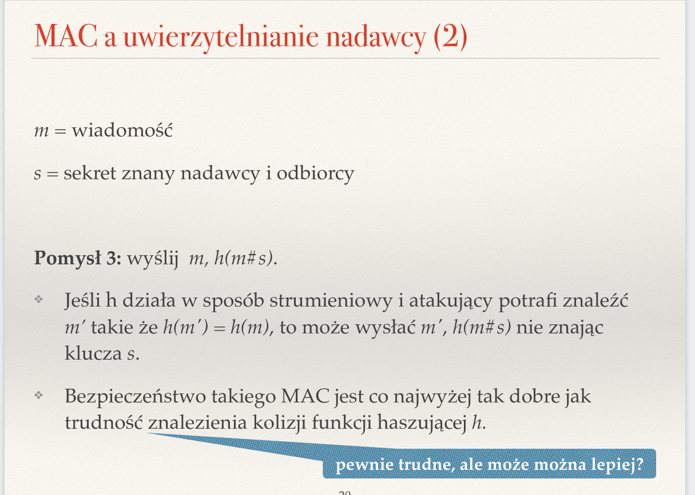
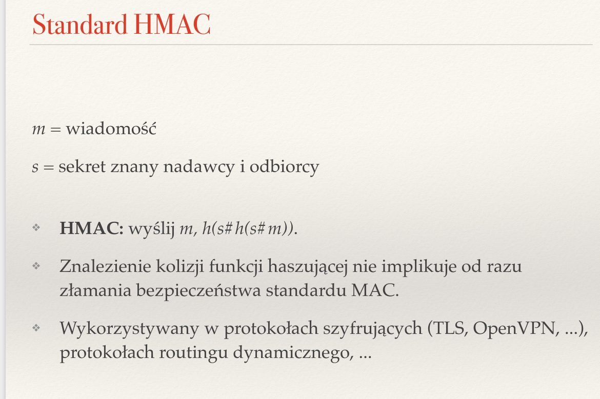
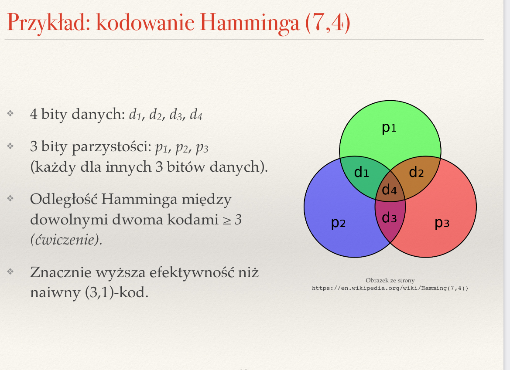
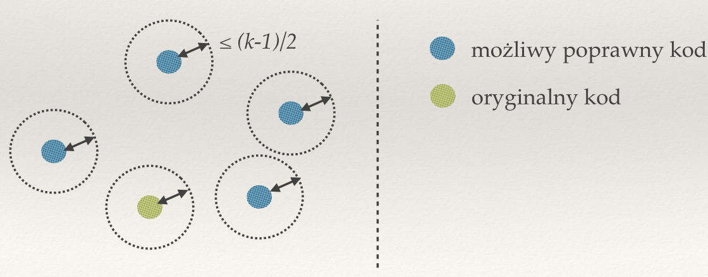
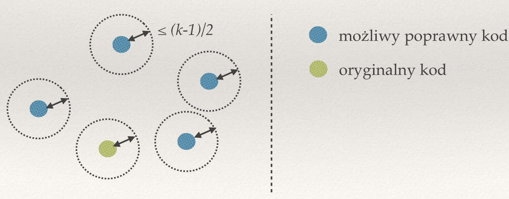
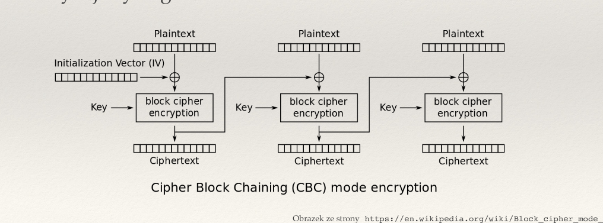

Created Sunday 26 June 2022
Zagadnienia
❖ Jakie znasz typy kodów detekcyjnych? Do czego służą i jakie są między nimi różnice?
Kody detekcyjne — bity dołączane do przesyłanych wiadomości, mające pozwolić na wykrycie niektórych przekłamań transmisji.
Typy:
- sumy kontrolne (CRC, bit parzystości, proste suma kontrolna) — mają na celu sprawdzić, czy w wiadomości nie wystąpiły przekłamania w czasie transmisji.
- kody MAC (Message Authentication Code — ma uwierzytelnić integralność wiadomości: trudno ją celowo zmodyfikować tak, by zostało to niewykryte)
❖ Jakie rodzaje błędów mają wykrywać kody detekcyjne? Z czego biorą się błędy przy przesyłaniu danych?
Źródła błędów:
- analogowy sygnał dociera zniekształcony (gubienie bitów, przekłamanie ciągu bitów, przekłamania niektórych bitów)
- błędy urządzeń końcowych lub pośrednich, np. błędy w oprogramowaniu lub wadliwy RAM.
Kody detekcyjne potrafią wykrywać błędy tego typu, np.:
- pojedyncze błędy bitów
- nieparzysta liczba pojedynczych blędów bitów
- dwa błędy bitów oddalone o co najwyżej jakąś odległość
- przekłamania ciągu bitów nie dłuższego niż jakaś odległość
❖ Jak działa algorytm obliczania sum kontrolnych CRC?
Wybieramy wielomian G(x) stopnia r (znany odbiorcy i nadawcy) i generujemy r-bitową sumę kontrolną taką, by ciąg bitów b i odpowiadający mu wielomian B(x) = x^r * M(x) + S(x), gdzie M to wiadomość, a S to suma kontrolna, był podzielny przez G(x). Każdemu ciągowi bitów przypisujemy wielomian — jeśli bit = 1 to mamy x w odpowiedniej potędze, jeśli mamy 0 to nie mamy danego składnika, tylko 0, np. 101 = x^2 + 1.
Odbiorca otrzymuje jakąś wiadomość b', której odpowiada wielomianm B'(x). Sprawdza, czy G(x) dzieli B'(x). Jeśli tak jest, to zakładamy, że dane są poprawne, jeśli nie, to musiało wystąpić przekłamanie.
❖ W jaki sposób działa wykrywanie błędów przy sumie kontrolnej CRC?
Sprawdzamy, czy wielomian G(x) dzieli wielomian, jaki odpowiada otrzymanej wiadomości. Jeśli dzieli bez reszty, to działa, a jeśli nie, to wystąpił błąd.
❖ Do czego służą kody MAC? Co to jest HMAC?
Kody MAC służą do weryfikacji, czy przesłana wiadomość nie została przez kogoś celowo zmodyfikowana. Stosuje kryptograficzne funkcje haszujące, np. SHA-256.

Standard HMAC to pewien standard zwiększający bezpieczeństwo kodów MAC, ponieważ znalezienie w nim kolizji funkcji haszującej nie implikuje od razu złamania bezpieczeństwa standardu MAC.

❖ Jakie własności powinna mieć kryptograficzna funkcja skrótu?
Dla dowolnego x znalezienie y, takiego że h(x) = h(y) jest obliczeniowo trudne, tzn. ciężko jest znaleźć taką wiadomość, by wystąpiła kolizja z inną wiadomością.

❖ Jakie znasz metody korygowania błędów w transmisji?
- kody korekcyjne, np. (a,b)-kody, np. kody Hamminga
- kody detekcyjne + mechanizmy ARQ (wysyłania do skutku)
❖ Co to jest (a,b)-kod? Podaj przykład.
(a,b)-kod to kod, który zamienia wiadomość długości b na kod długości a>=b. Przykład to bit parzystości dla ciągów 7-bitowych, czyli (8,7)-kod. Narzut kodu to a/b.
❖ Co to jest odległość Hamminga? Jak wpływa na możliwość detekcji i korekcji błędów?
Odległość Hamminga — minimalna liczba bitów, jaką należy zmienić w kodzie, by zamienić go w inny poprawny kod. Jeśli mamy kodowanie, które gwarantuje, że odległość Hamminga między dowolną parą kodów to co najmniej k, wtedy potrafimy wykryć do k-1 błędów pojedynczych bitów oraz skorygować do (k-1)/2 błędów pojedynczych bitów.

 

❖ Czym różni się poufność od integralności?
Poufność — tylko nadawca i odbiorca wiedzą, co jest przesyłane.
Integralność — wykrywanie (złośliwych) zmian w przesyłanej wiadmości.
Uwierzytelnianie — potwierdzenie tożsamości drugiej strony.
❖ Co to są szyfry monoalfabetyczne? Dlaczego łatwo je złamać?
Szyfry monoalfabetyczne to szyfry, które mapują jedną literę alfabetu na inną, ale zawsze taką samą. Łatwo je złamać, ponieważ mapowanie liter jest zawsze takie samo — łatwo je odgadnąć, jeśli możemy podejrzeć szyfrogram i tekst jawny, a nawet z samym szyfrogramem możemy oszacować jakie jest mapowanei znaków. Możliwe strategie ataków to:
- atak z wybranym tekstem jawnym — adwersarz zmusza jedną stronę do nadawania wiadomości znanej adwersarzowi, na podstawie której może potem rozpoznać przesunięcie
- atak ze znanym tekstem jawnym — adwersarz potrafi podejrzeć kilka par (tekst jawny, szyfrogram) i wtedy łatwo może odgadnąć kodowanie.
- atak ze znanym szyfrogramem — jeśli adwersarz widzi jedynie szyfrogramy, wtedy może statystycznie oszacować jakie jest kodowanie (częstość występowania liter, itd.)
❖ Na czym polegają ataki z wybranym tekstem jawnym, znanym tekstem jawnym i znanym szyfrogramem?
- atak z wybranym tekstem jawnym — adwersarz zmusza jedną stronę do nadawania wiadomości znanej adwersarzowi, na podstawie której może potem rozpoznać przesunięcie
- atak ze znanym tekstem jawnym — adwersarz potrafi podejrzeć kilka par (tekst jawny, szyfrogram) i wtedy łatwo może odgadnąć kodowanie.
- atak ze znanym szyfrogramem — jeśli adwersarz widzi jedynie szyfrogramy, wtedy może statystycznie oszacować jakie jest kodowanie (częstość występowania liter, itd.)
❖ Czym szyfrowanie symetryczne różni się od asymetrycznego?
Szyfrowanie symetryczne — obie strony znają ten sam klucz, który parametryzuje publiczny algorytm szyfrujący, i tekst jawny. Dany jest też odpowiedni algorytm deszyfrujący parametryzowany tym samym kluczem. Obie strony komunikacji znają ten sam klucz i uzywają go do szyfrowania i deszyfrowania. Przykład to One-Time Pad.
Szyfrowanie asymetryczne — problemem z szyfrowaniem symetrycznym jest ustalenie bezpiecznego sposobu na wysyłanie wspólnego klucza. W tym celu stosuje się inne rozwiązanie — szyfrowanie asymetryczne — gdzie mamy dwie pary kluczy — publicznych i prywatnych.

❖ Co to jest szyfrowanie one-time pad?
One-Time Pad to metoda szyfrowania symetrycznego, w której wiadomość xorujemy z kluczem (musi być tak samo długi jak wiadomość).
❖ Na czym polega szyfrowanie blokowe? Czym różni się tryb ECB od CBC?
Szyfrowanie blokowe — gdy nadajemy długie wiadomości, to możemy mieć problem z szyfrowaniem, bo większość algorytmów szyfrowania symetrycznego zakłada, że wiadomość ma określoną długość, np. 128 bitów. Dlatego wiadomości dzieli się wtedy na bloki takiego rozmiaru i szyfruje je jeden po drugim. Ostatni kawałek jest dopełniany do długości bloku.
ECB (electronic codebook) — każdy blok jest szyfrowany niezależnie tym samym kluczem. Z tego powodu takie same bloki dają takie same kawałki szyfrogramu. Można dodać losowość, by wiadomość w każdym bloku xorować z losowym ciągiem, i dopiero wtedy szyfrować bloki, ale wtedy dwukrotnie zwiększamy rozmiar wysyłanej wiadomości (trzeba też wysłać losowe ciągi).

CBC (Cipher block chaining) — losuje pierwszy wektor bitów (wektor iniicjujący) i szyfruje z jego pomocą pierwszy blok. Następnie kolejne bloki są szyfrowane za pomocą szyfrogramu poprzedniego bloku. Musimy wtedy wysłać tylko szyfrogram i wektor inicjujący.

{kind=link}
{kind=link}
{kind=link}
{kind=link}
{kind=link}